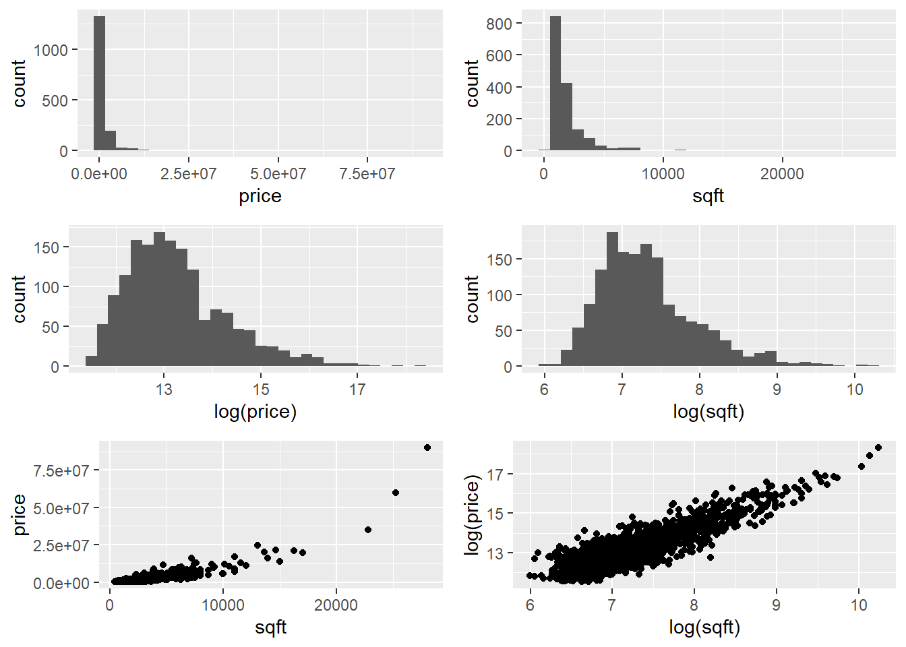

Assess the model assumptions for the parallel regression lines/slopes model. Do they appear valid?
Return to the Credit data set and fit a multiple regression model with Balance as the outcome variable, and Income and Age as the explanatory variables, respectively. Assess the assumptions of the multiple regression model.
Return to the Credit data set and fit a parallel regression lines model with Balance as the outcome variable, and Income and Student as the explanatory variables, respectively. Assess the assumptions of the fitted model.
Trickier
Load the library datasets and look at the iris data set of Edgar Anderson containing measurements (in centimetres) on 150 different flowers across three different species of iris. Fit an interaction model with Sepal.Width as the outcome variable, and Sepal.Length and Species as the explanatory variables. Assess the assumptions of the fitted model.
Further Tasks
You are encouraged to complete the following tasks by using Quarto to produce a single document which summarises all your work, i.e. the original questions, your R code, your comments and reflections, etc.
Data was collected on the characteristics of homes in the American city of Los Angeles (LA) in 2010 and can be found in the file LAhomes.csv on the Moodle page. The data contain the following variables:
city - the district of LA where the house was located
type - either SFR (Single Family Residences) or Condo/Twh (Condominium/Town House)
bed - the number of bedrooms
bath - the number of bathrooms
garage - the number of car spaces in the garage
sqft - the floor area of the house (in square feet)
pool - Y if the house has a pool
spa - TRUE if the house has a spa
price - the most recent sales price ($US)
We are interested in exploring the relationships between price and the other variables.
Read the data into an object called LAhomes and answer the following questions.
By looking at the univariate and bivariate distributions on the price and sqft variables below, what would be a sensible way to proceed if we wanted to model this data? What care must be taken if you were to proceed this way?
library(gridExtra) # Package to display plots side by side hist1 <-ggplot(LAhomes, aes(x = price)) +geom_histogram()hist2 <-ggplot(LAhomes, aes(x = sqft)) +geom_histogram()hist1log <-ggplot(LAhomes, aes(x =log(price))) +geom_histogram()hist2log <-ggplot(LAhomes, aes(x =log(sqft))) +geom_histogram()plot1 <-ggplot(LAhomes, aes(x = sqft, y = price)) +geom_point()plot2 <-ggplot(LAhomes, aes(x =log(sqft), y =log(price))) +geom_point()grid.arrange(hist1, hist2, hist1log, hist2log, plot1, plot2,ncol =2, nrow =3)

Fit the simple linear model with log(price) as the response and log(sqft) as the predictor. Display the fitted model on a scatterplot of the data and construct a confidence interval for the slope parameter in the model and interpret its point and interval estimates.
Repeat the analysis in part b. but with the log of the number of bathrooms (bath) as the single explanatory variable.
Fit the multiple linear regression model using the log transform of all the variablesprice (as the response) and both sqft and bath (as the explanatory variables). Calculate the point and interval estimates of the coefficients of the two predictors separately. Compare their point and interval estimates to those you calculated in parts b. and c. Can you account for the differences?
Using the objective measures for model comparisons, which of the models in parts b., c. and d. would you favour? Is this consistent with your conclusions in part d.?
You have been asked to determine the pricing of a New York City (NYC) Italian restaurant’s dinner menu such that it is competitively positioned with other high-end Italian restaurants by analysing pricing data that have been collected in order to produce a regression model to predict the price of dinner.
Data from surveys of customers of 168 Italian restaurants in the target area are available. The data can be found in the file restNYC.csv on the Moodle page. Each row represents one customer survey from Italian restaurants in NYC and includes the key variables:
Price - price (in $US) of dinner (including a tip and one drink)
Food - customer rating of the food (from 1 to 30)
Decor - customer rating of the decor (from 1 to 30)
Service - customer rating of the service (from 1 to 30)
East - dummy variable with the value 1 if the restaurant is east of Fifth Avenue, 0 otherwise
Use the ggpairs function in the GGally package (see the following code) to generate an informative set of graphical and numerical summaries which illuminate the relationships between pairs of variables. Where do you see the strongest evidence of relationships between price and the potential explanatory variables? Is there evidence of multicollineatity in the data?
library(GGally) # Package to produce matrix of 'pairs' plots and more!restNYC$East <-as.factor(restNYC$East) # East needs to be a factor# Including the `East` factorggpairs(restNYC[, 4:8], aes(colour = East, alpha =0.4)) # Without the `East` factorggpairs(restNYC[, 4:7], aes(alpha =0.4))
Fit the simple linear model with Price as the response and Service as the predictor and display the fitted model on a scatterplot of the data. Construct a confidence interval for the slope parameter in the model.
Now fit a multiple regressing model of Price on Service, Food, and Decor. What happens to the significance of Service when additional variables were added to the model?
What is the correct interpretation of the coefficient on Service in the linear model which regresses Price on Service, Food, and Decor?